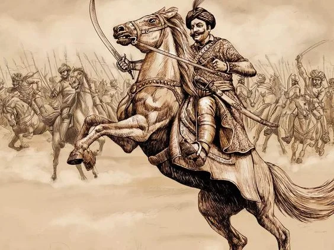

The Rajput warriors were renowned for their unmatched valor, chivalry, and unwavering sense of honor. Emerging as a prominent warrior class in medieval India, they played a decisive role in defending their kingdoms against numerous invasions, from early Arab incursions to the might of the Delhi Sultanate, the Mughals, and even the British. Bound by a strict code of loyalty and bravery, Rajputs valued sacrifice over surrender, often choosing death in battle rather than dishonor. Legendary figures like Maharana Pratap of Mewar and Prithviraj Chauhan became enduring symbols of courage and resistance. Their legacy lives on not only in historical accounts but also in the forts, ballads, and traditions that continue to inspire pride and respect for their indomitable spirit. The courage of the Rajput warriors on the battlefield was matched by their vision off it, creating a legacy that was as much about cultural pride as it was about military might. Their unwavering defense of their kingdoms not only safeguarded their people but also preserved the traditions, art, and architecture that flourished under their rule. The same honor that drove them to face overwhelming odds in war inspired them to build enduring monuments, foster vibrant courts, and uphold a code of justice and dignity. In this way, the Rajputs became both protectors and creators, ensuring that their valor and cultural contributions would be remembered together as inseparable parts of their enduring heritage. 
Beyond their battlefield heroics, the Rajput warriors were also patrons of art, architecture, and culture, leaving behind a rich heritage that reflects both their martial and aesthetic sensibilities. They constructed magnificent forts, palaces, and temples, many of which still stand as symbols of their grandeur and resilience. Their courts were centers of poetry, music, and craftsmanship, blending martial pride with refined cultural expression. The Rajput code of ethics extended to governance as well, emphasizing justice, protection of the weak, and respect for allies and foes alike. This unique balance of strength and sophistication ensured that their influence extended far beyond warfare, shaping the social and cultural fabric of India for centuries.